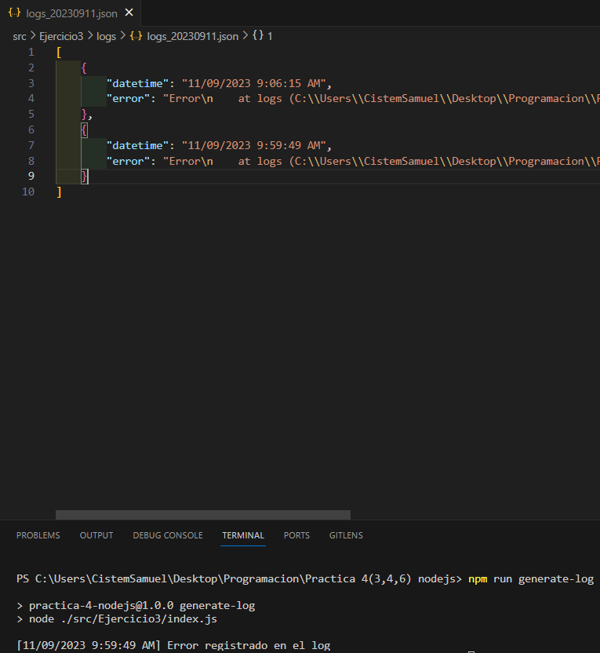

Ejercicio 3: Generador de Logs
Cuando trabajamos servicios de backend, es muy común que se ofrescan opciones para poder conocer los errores que ocurren internamente en la aplicación. En esta práctica, se realizará un generador de logs, donde todos los errores que capturemos se registrarán y registrarán en un archivo .json, dentro de un directorio al cual denominaremos como logs.
Requerimientos
A continuación se enlistarán los requerimientos de esta práctica:
- En la raiz del proyecto, colocar un directorio que se llamara logs
- El directorio de logs, estará vacío por defecto hasta que se generé un archivo log .json. Sin embargo, el algoritmo de Git deberá darle seguimiento a pesar de estár vacío.
- Los archivos logs .json no deben subirse al repositorio de Github. El algoritmo de Git, deberá ignorar todos los logs .json que se generen.
- El nombre del archivo log .json, deberá ser conformado por la siguiente estructura:
- Iniciara con el prefijo logs_.
- Seguido del guión bajo, se colocará la fecha del día:
logs_2023087- Seguido de la extension:
logs_20230807.json- El contenido del archivo log .json, debera ser algo como el siguiente:
[ { "datetime": "07/09/2023 12:04:29 PM", "error": "Error: \n at NotFoundHandler (C:\\daniel-dev23\\apps\\rest-api\\task-app-js\\src\\shared\\middlewares\\HttpErrorHandler\\/error.handler.js:37:53)\n at Layer.handle [as handle_request] (C:\\daniel-dev23\\apps\\rest-api\\task-app-js\\node_modules\\express\\lib\\router\\layer.js:95:5)\n at trim_prefix (C:\\daniel-dev23\\apps\\rest-api\\task-app-js\\node_modules\\express\\lib\\router\\index.js:328:13)\n at C:\\daniel-dev23\\apps\\rest-api\\task-app-js\\node_modules\\express\\lib\\router\\index.js:286:9\n at Function.process_params (C:\\daniel-dev23\\apps\\rest-api\\task-app-js\\node_modules\\express\\lib\\router\\index.js:346:12)\n at next (C:\\daniel-dev23\\apps\\rest-api\\task-app-js\\node_modules\\express\\lib\\router\\index.js:280:10)\n at C:\\daniel-dev23\\apps\\rest-api\\task-app-js\\node_modules\\express\\lib\\router\\index.js:646:15\n at next (C:\\daniel-dev23\\apps\\rest-api\\task-app-js\\node_modules\\express\\lib\\router\\index.js:265:14)\n at Function.handle (C:\\daniel-dev23\\apps\\rest-api\\task-app-js\\node_modules\\express\\lib\\router\\index.js:175:3)\n at router (C:\\daniel-dev23\\apps\\rest-api\\task-app-js\\node_modules\\express\\lib\\router\\index.js:47:12)\n at Layer.handle [as handle_request] (C:\\daniel-dev23\\apps\\rest-api\\task-app-js\\node_modules\\express\\lib\\router\\layer.js:95:5)\n at trim_prefix (C:\\daniel-dev23\\apps\\rest-api\\task-app-js\\node_modules\\express\\lib\\router\\index.js:328:13)\n at C:\\daniel-dev23\\apps\\rest-api\\task-app-js\\node_modules\\express\\lib\\router\\index.js:286:9\n at Function.process_params (C:\\daniel-dev23\\apps\\rest-api\\task-app-js\\node_modules\\express\\lib\\router\\index.js:346:12)\n at next (C:\\daniel-dev23\\apps\\rest-api\\task-app-js\\node_modules\\express\\lib\\router\\index.js:280:10)\n at Function.handle (C:\\daniel-dev23\\apps\\rest-api\\task-app-js\\node_modules\\express\\lib\\router\\index.js:175:3)\n at router (C:\\daniel-dev23\\apps\\rest-api\\task-app-js\\node_modules\\express\\lib\\router\\index.js:47:12)\n at Layer.handle [as handle_request] (C:\\daniel-dev23\\apps\\rest-api\\task-app-js\\node_modules\\express\\lib\\router\\layer.js:95:5)\n at trim_prefix (C:\\daniel-dev23\\apps\\rest-api\\task-app-js\\node_modules\\express\\lib\\router\\index.js:328:13)\n at C:\\daniel-dev23\\apps\\rest-api\\task-app-js\\node_modules\\express\\lib\\router\\index.js:286:9\n at Function.process_params (C:\\daniel-dev23\\apps\\rest-api\\task-app-js\\node_modules\\express\\lib\\router\\index.js:346:12)\n at next (C:\\daniel-dev23\\apps\\rest-api\\task-app-js\\node_modules\\express\\lib\\router\\index.js:280:10)\n at C:\\daniel-dev23\\apps\\rest-api\\task-app-js\\node_modules\\body-parser\\lib\\read.js:137:5\n at AsyncResource.runInAsyncScope (node:async_hooks:203:9)\n at invokeCallback (C:\\daniel-dev23\\apps\\rest-api\\task-app-js\\node_modules\\raw-body\\index.js:231:16)\n at done (C:\\daniel-dev23\\apps\\rest-api\\task-app-js\\node_modules\\raw-body\\index.js:220:7)\n at IncomingMessage.onEnd (C:\\daniel-dev23\\apps\\rest-api\\task-app-js\\node_modules\\raw-body\\index.js:280:7)\n at IncomingMessage.emit (node:events:514:28)\n at endReadableNT (node:internal/streams/readable:1359:12)\n at processTicksAndRejections (node:internal/process/task_queues:82:21)" } ]En el ejemplo anterior, tenemos un arreglo de objetos, donde cada objeto representa un error registrado. Aquí tenemos la propiedad datetime, que representa la fecha y la hora en la cual se registro el error. Además de tener la propiedad error, que representa el stack del error en cuestión.
TIP: Para generár el stack del error, se recomienda capturar el error utilizando try-catch. Al atrapar el error, solo hacemos un error.stack y lo podremos obtener.Cuando ocurra un error, en la consola deberá aparecer un mensaje que diga: "[08/09/2023 09:50:23 AM] Error registrado en el log..." (claramente, la fecha y hora generada se dependerá el momento en que se generé). Documentar el codigo de la practica con JS Docs.
Reglas
- La propiedad datetime debe cumplir con el formato
- La hora en la propiedad datetime, debe diferenciarse entre AM o PM.
Script de Ejecucion
Diríjase al package.json y elabore un script de ejecución llamado generate-log que ejecute la práctica con la paquetería Nodemon.
Ejecucion de proyecto
Teniendo la terminal abierta en la ruta "./ProyectoGenerales" ingresar el siguiente comando:
Resultado
